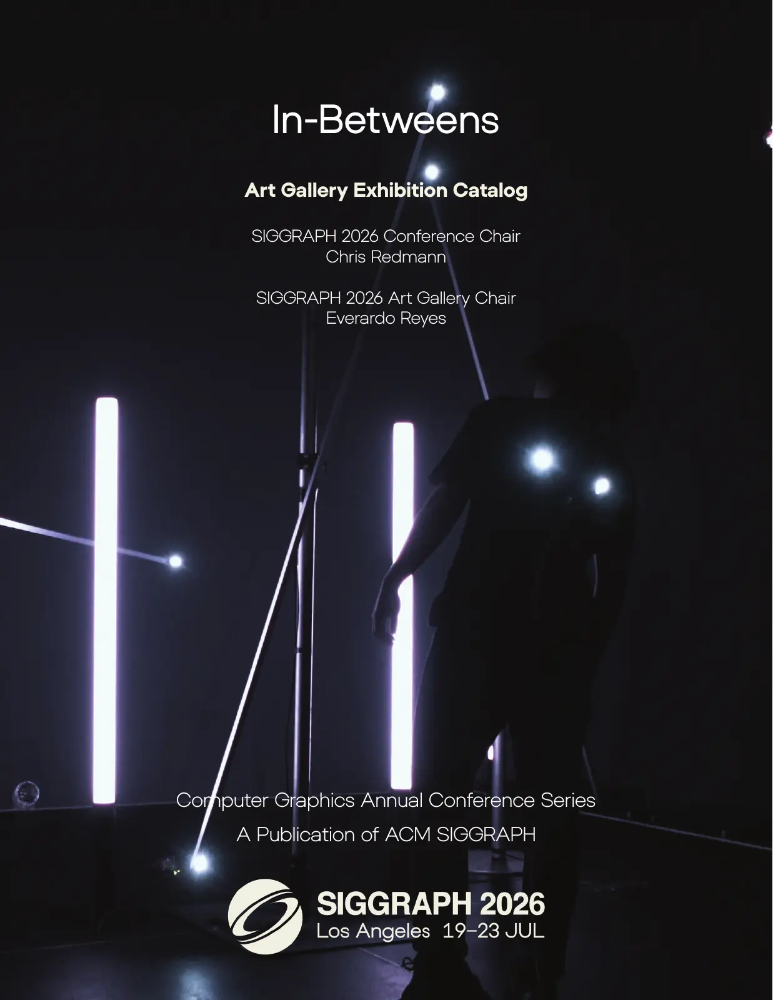

DOI 10.1145/3799824Published Preface
In-Betweens
The published preface extends this brief introduction into a guided reading of the twelve juried installations and two curated contributions. It follows the exhibition theme across bodies, computation, memory, biology, and planetary time.
It also situates the gallery within SIGGRAPH’s longer history of computer art—from the 1981 Frame Buffer Show to contemporary animation, AI, and real-time systems.